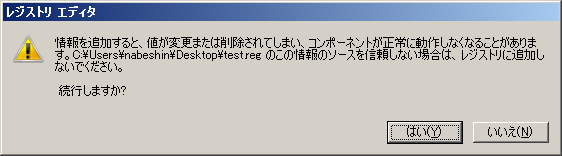
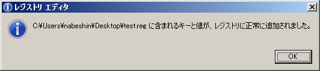
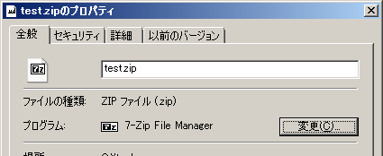
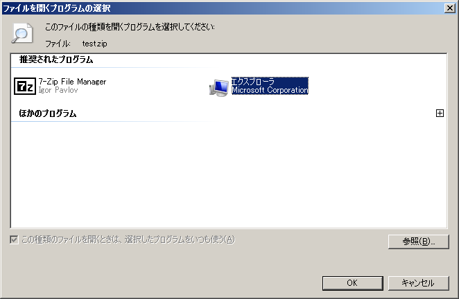

ZIPの関連付けをWindows標準に戻す（初期化する）
圧縮・展開（解凍）ソフトをインストールすると、ZIPファイルなどに関連付けが行われます。その後、それらのソフトをアンインストールしてもWidnows標準の状態には戻らず、ZIPファイルへの関連付けが失われる（ZIPファイルをダブルクリックしても何も起こらない）ということになりやすいです。
これは、各ソフトのアンインストール、インストールの挙動に影響しますが、Windows標準のZIP展開機能の「CompressedFolder」（zipfldr.dll）の登録情報がAll Usersならびにログインユーザーの設定からなくなってしまったためためです。エクスプローラの関連付け候補にも出なくなって、通常の方法では再設定できなくなることも多いです。
Windows Vista、Windows 7の環境では、初期化といっても元の設定が残っていない、戻せない状態なので、レジストリ操作が必須となります。
なお、Windows標準のZIP機能はすべてのZIPに対応しているわけではないので、Windows標準機能を利用するより7-Zipを利用したほうが確実です。ZIPの関連付けがおかしくなってしまった場合は、7-Zipで関連付けを上書きしてしまうという方法もいいでしょう。
また、7-Zipのバージョン9.23（alpha版）以降では、All Usersとログインユーザーの関連付けを個別に設定できるようになるので、7-Zipのオプションで調整するほうが楽になるかもしれません（ほかのツールでCompressedFolderを削除されてしまった場合は同様にレジストリでの編集が必要です）。
Windows Vista、Windows 7でZIPファイルへの関連付けを元に戻す
Windows Vista、Windows 7においてZIPファイルへの関連付けを元に戻すには、まずCompressedFolderの設定をレジストリに復元します。この際、手で書き換えるのは難しいので、以下の設定項目を記載したレジストリファイルを作成し、それをダブルクリックすることで追加するのがいいでしょう。
メモ帳などのテキストエディタを起動し、以下の内容を記載します。
Windows Registry Editor Version 5.00
[-HKEY_CLASSES_ROOT\CompressedFolder]
[HKEY_CLASSES_ROOT\CompressedFolder]
@="Compressed (zipped) Folder"
"FriendlyTypeName"=hex(2):40,00,25,00,53,00,79,00,73,00,74,00,65,00,6d,00,52,\
00,6f,00,6f,00,74,00,25,00,5c,00,73,00,79,00,73,00,74,00,65,00,6d,00,33,00,\
32,00,5c,00,7a,00,69,00,70,00,66,00,6c,00,64,00,72,00,2e,00,64,00,6c,00,6c,\
00,2c,00,2d,00,31,00,30,00,31,00,39,00,35,00,00,00
[HKEY_CLASSES_ROOT\CompressedFolder\CLSID]
@="{E88DCCE0-B7B3-11d1-A9F0-00AA0060FA31}"
[HKEY_CLASSES_ROOT\CompressedFolder\DefaultIcon]
@=hex(2):25,00,53,00,79,00,73,00,74,00,65,00,6d,00,52,00,6f,00,6f,00,74,00,25,\
00,5c,00,73,00,79,00,73,00,74,00,65,00,6d,00,33,00,32,00,5c,00,7a,00,69,00,\
70,00,66,00,6c,00,64,00,72,00,2e,00,64,00,6c,00,6c,00,00,00
[HKEY_CLASSES_ROOT\CompressedFolder\shell]
[HKEY_CLASSES_ROOT\CompressedFolder\shell\find]
"LegacyDisable"=""
"SuppressionPolicy"=dword:00000080
[HKEY_CLASSES_ROOT\CompressedFolder\shell\find\command]
@=hex(2):25,00,53,00,79,00,73,00,74,00,65,00,6d,00,52,00,6f,00,6f,00,74,00,25,\
00,5c,00,45,00,78,00,70,00,6c,00,6f,00,72,00,65,00,72,00,2e,00,65,00,78,00,\
65,00,00,00
"DelegateExecute"="{a015411a-f97d-4ef3-8425-8a38d022aebc}"
[HKEY_CLASSES_ROOT\CompressedFolder\shell\Open]
"MultiSelectModel"="Document"
[HKEY_CLASSES_ROOT\CompressedFolder\shell\Open\Command]
@=hex(2):25,00,53,00,79,00,73,00,74,00,65,00,6d,00,52,00,6f,00,6f,00,74,00,25,\
00,5c,00,45,00,78,00,70,00,6c,00,6f,00,72,00,65,00,72,00,2e,00,65,00,78,00,\
65,00,20,00,2f,00,69,00,64,00,6c,00,69,00,73,00,74,00,2c,00,25,00,49,00,2c,\
00,25,00,4c,00,00,00
"DelegateExecute"="{11dbb47c-a525-400b-9e80-a54615a090c0}"
[HKEY_CLASSES_ROOT\CompressedFolder\ShellEx]
[HKEY_CLASSES_ROOT\CompressedFolder\ShellEx\ContextMenuHandlers]
[HKEY_CLASSES_ROOT\CompressedFolder\ShellEx\ContextMenuHandlers\{b8cdcb65-b1bf-4b42-9428-1dfdb7ee92af}]
@="Compressed (zipped) Folder Menu"
[HKEY_CLASSES_ROOT\CompressedFolder\ShellEx\DropHandler]
@="{ed9d80b9-d157-457b-9192-0e7280313bf0}"
[HKEY_CLASSES_ROOT\CompressedFolder\ShellEx\StorageHandler]
@="{E88DCCE0-B7B3-11d1-A9F0-00AA0060FA31}"
ここで指定しているHEXの中身は、「%SystemRoot%\system32\zipfldr.dll」やエクスプローラなどのパスとファイル名指定です。値にシステム変数の「%SystemRoot%」を使っているため、REG_EXPAND_SZ（展開文字列）で指定する必要があり、HEXを使っています。あやしい文字列はありませんので、興味のある方はレジストリエディタで確認してみるといいでしょう。
これを適当なファイル名（test.regなど）で保存します。
このファイルをダブルクリックすると、ユーザーアカウント制御の確認が行われ、OKを押すと、さらにレジストリ操作の確認画面が表示されます。
 以上でCompressedFolderの追加は終了です。
あとは、CompressedFolder（エクスプローラ）に関連付けを行います。適当なZIPファイルを右クリックして「プロパティ」を選択します。
プログラムのところにある「変更」ボタンを押します。
ここで「エクスプローラ」という選択肢がでてくるので、これを選択すればWindows標準の状態になります。
OSDN Project